简单式状态，主要用于交代动作发生在什么时间内。所以，除非上下文已经有暗示、对方已经知道是什么时间，否则必须要明确说出动作发生的时间。举一个例子：
I saw the movie last week.
（那部电影我是上礼拜看的。）
当然，所谓 last week 严格讲起来有七天之久，而「看电影」的动作可能花不到两个小时。不过，简单式的情况通常就是这样：说出一段时间（如 last week），动作只要落在这段时间之内就行。
简单式状态可以用图像的方式来理解：它标示出来的时间呈括弧形状，动作就落在括弧里面。如果这个括弧是在过去，就应采用过去简单式。例如：
The U.S. declared independence in 1776.
（美国在1776年宣告独立。）
图示：
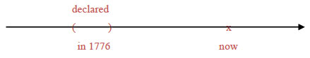
这个句子的时间副词是 in 1776 这个介系词片语，标示出一个过去时间的括弧，动作落在这个括弧内，所以动词应采过去简单式 declared。
The dynamite was invented by the Chinese.
（火药是中国人发明的。）
图示：
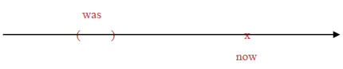
这个句子里面找不到时间副词，但是从句意来看，它描述的事情发生在久远以前，所以它的时间是个过去的括弧，动词应该是过去简单式。复杂的动词时态一定会有 be 动词在内。认定 be 为动词，它的过去简单式就是 was。后面的过去分词 invented 视为形容词，表达出「被动」语态，解释为「被发明」，作主词补语使用、修饰主词 dynamite。这就是一般文法书所谓的过去简单被动态。
I was playing a video game when the power suddenly went out.
（我正在打电动，忽然停电了。）
图示：
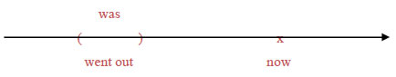
这个句子的时间副词是 when 引导的那个副词子句。从副词子句里面的过去简单式动词 went out 来看，它的时间是一个过去的括弧——而且是个极小的括弧：从「有电」变成「没电」的那一刹那。以这个时间副词子句修饰主要子句的动词（我们一律认定 be 为动词），那么主要子句也应该是过去简单式，所以动词是 was。后面的现在分词片语 playing a video game 是动词play加受词 a video game 的构造，加上 -ing 字尾变成现在分词片语之后就是一个形容词片语，当作主词补语使用、修饰主词 I 。现在分词的 -ing 字尾表达进行状态，相当于中文的「正在」（短时间）或「一直」（长时间）。就上面这个例子而言，playing a video game 应解释为「正在打电动」。这就是一般文法书所谓的过去进行式。
I was working on my paper throughout last week
.
（上周一整个礼拜我都在写论文。）
图示：
这个句子的时间副词 throughout last week 是个介系词片语，表现出一个过去时间的括弧。动词因而要采过去简单式 was。后面的现在分词片语 working on my report 视为形容词片语，-ing 字尾表达进行状态，因为是长时间所以就解释为「一直」在写论文，当作主语补语使用、修饰主词 I。
The house was being renovated when it collapsed on the workers
.
（这栋房子正在翻修，突然塌下来压到工人。）
图示：
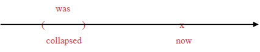
这个句子的时间副词是 when 引导的那个副词子句，子句中过去简单式的动词 collapsed 显示它的时间是个过去的括弧。所以，主要子句的动词也应该是过去简单式，因此就是was。后面的分词片语 being renovated 含有现在分词 being 与过去分词 renovated，整个分词片语当形容词补语使用、修饰主词the house。现在分词 being 里面的 be 无意义、不须解释，字尾的 -ing 表达进行状态，因为是短时间所以解释为「正在」。过去分词 renovated 表达被动语态、解释为「被翻修」。整个片语 being renovated 仍视为现在分词片语，意思是「正在被翻修」。这就是一般文法书所谓的过去进行被动态。
现在简单式，它的时间就是以 now 为中心的一个括弧。所有的简单式都是括弧形状的时间，但是过去简单式的括弧在 now 之前、未来简单式的括弧在 now 之后，所以括弧的大小都受到限制。只有现在简单式的括弧是以 now 为中心，它的大小不受限制，可以大到无限大、包含过去未来的一切时间。传统文法列出规则说「真理、事实等要用现在简单式」，原因就在此。看看几个例子：
I have a headache.
（我头痛。）
图示：
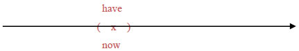
这个句子虽然没有时间副词，但是现在简单式的动词 have 清楚表示时间就是 now。
Wang Chien-Ming pitches for the Yankees.
（王建民为洋基队投球。）
图示：
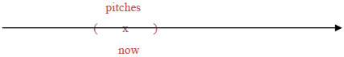
这一句并没有时间副词，不过暗示是「现在」。王建民几年前不是洋基队的投手、几年后他也可能不再是。这个句子的时间是一个以 now 为中心的比较大的括弧，仍然该用现在简单式。
Our summer house is located on the lake.
（我们的避暑别墅座落在湖边。）
图示：
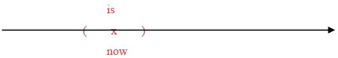
这个句子同样也没有时间副词，但是现在简单式的动词 is 表示它的时间是一个以 now 为核心的括弧。后面的过去分词片语 located on the lake 是形容词补语，表达出被动语态：字面上是「被摆在湖边」，也就是「座落在湖边」。这就是一般文法书所谓的现在简单被动态。
Please be quiet, because everybody is sleeping now.
（请安静，因为大家都在睡觉。）
图示：
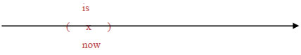
Because 引导的这个表示原因的副词子句，时间是 now，动词用的是现在简单式 is。后面的现在分词 sleeping 视为形容词补语，表达出「进行」状态，解释为「正在」睡觉。这就是一般文法书所谓的现在进行式。
This store is selling everything at a 30% discount this week, to celebrate its 20th anniversary.
（这家店本周全面打七折、庆祝20周年。）
图示：
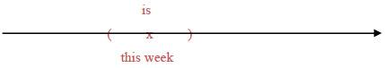
这个句子的时间副词是 this week，这是一个包含 now 在内的括弧，所以动词用的是现在简单式的 is。后面的 selling everything at a 30% discount 这个现在分词片语视为形容词补语，现在分词 selling 表现出进行状态。因为时间长（有一周），所以 selling 应解释为「一直卖」。这就是一般文法书所谓的现在进行式。
This road is closed to traffic now because it is being widened.
（这条路目前封闭，因为正在拓宽。）
图示：
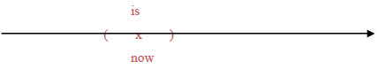
主要子句的时间副词 now 是标准的现在时间括弧，所以动词用的是现在简单式 is。后面的过去分词片语 closed to traffic 当形容词补语看待，过去分词 closed 表达出被动语态，解释为「被封闭」。另外在 because 引导的副词子句中，因为是同样的时间，所以动词也同样采取现在简单式 is。后面的 being widened 这个现在分词片语视为形容词补语。其中的现在分词 being 表达出进行状态、解释为「正在」（be 动词无意义、不须解释），过去分词 widened 表达出被动语态、解释为「被拓宽」。这就是一般文法书所谓的现在进行被动态。
简单式的时间都是括弧形状。如果括弧在未来，就应该采取未来简单式。未来的事情由于尚未发生，牵涉到比较多的不确定因素，所以它的表达方式也比较多样。未来时间的简单式动词，整理一下有6种方式可以表达：
John will leave tomorrow.
John is going to leave tomorrow.
John is to leave tomorrow.
John is leaving tomorrow.
John will be leaving tomorrow.
John leaves tomorrow.
时间副词 tomorrow 是一个放在未来的括弧，应采未来简单式。一般文法书所谓的未来简单式是指上述的第 1 种：will leave。这种使用到助动词 will 的讲法，具有最浓厚的「不确定」语气，表示「到时候将会、可能会」，语气的重点放在未来。
第 2 种讲法 is going to leave 和第 1 种 will leave 相当接近，不过它比较口语化、比较不正式。而且 is going to leave 这种说法的语气比较偏重在「现在」的意图、打算、征兆等等。例如：
Because the weatherman says it will rain this afternoon, I’m going to bring an umbrella.
(因为气象报告说下午会下雨，我打算带把雨伞出门。)
句中的 it will rain this afternoon 讲的是「未来时间将会如何」，采用第 1 种讲法 will rain 来表示；至于 I'm going to bring an umbrella 讲的则是「现在打算到时候将如何」 ，采用第 2 种讲法 am going to bring 来表示。
第 3 种讲法 is to leave 和第 4 种讲法 is leaving 都可以视为第 2 种 is going to leave 的变化。
如果把动词改一下，从 leave 换成 go，可以看得更清楚：
John is going to go tomorrow.（第2种）
像 is going to go 这种讲法，里面的 going 和 to go 产生重复，是比较拙劣的说法。为了避免重复，可以省掉 going 只留下 to go，就会成为：
John is to go tomorrow.（第3种）
反之，如果省掉的是 to go、只留下 going，就会成为：
John is going tomorrow.（第4种）
这两种省略的说法分别相当于前述 6 种说法中的第 3 种和第 4 种。所以：第 3 种未来式 John is to leave tomorrow 和第 4 种未来式 John is leaving tomorrow 都可以视为第 2 种未来式 John is going to leave tomorrow 的省略。第 5 种变化则是在第 4 种前面再加一个 will，成为 John will be leaving tomorrow，意思还是差不多。
而且，最适合采用第 3、第 4、第 5 种讲法来表达的未来式动词，大都是一些和 go 有点关连的字，像是 go, come, leave, arrive, begin, end 等等。这些表示「来、去、离开、到达、开始、结束」的字眼，往往代表一种「目前的规画或打算」，这和第 2 种 be going to V 代表「目前的规画或打算」的讲法是同样的性质。为了避免重复，所以经常省略成为 be to V（第3种）、be Ving（第4种），或 will be Ving（第5种）。例如：
The weatherman says a Typhoon is coming this way.
(气象报造说台风要来了。)
The train is leaving in 10 minutes.
(火车再过十分钟要开。)
We will be arriving in Shanghai soon.
(我们快要抵达上海了。)
The final game is to start in five minutes.
(决赛再过五分钟即将开始。)
至于第 6 种讲法 John leaves tomorrow，完全是把未来才要发生的事情当做「事实」、采用现在简单式来叙述。这是语气最肯定的一种讲法。例如：
The train leaves at 2:30.
(火车两点半开。)
World Cup finals begin tomorrow night.
(世界杯决赛明晚开打。)
这些句子讲的都是「早已排定」的事情。虽然尚未发生，但是已经非常确定，可以排除掉带有不确定意味的助动词will、直接用现在简单式把它当做事实来叙述。
再看一个未来式的例子：
I will discuss the plan with my boss next week.
(下星期我会和老板谈一下这个计画。)
图示：
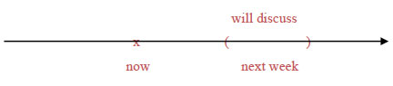
时间副词 next week 是一个未来时间的括弧。只要可以括出时间来就是简单式。未来的事情还没发生、尚未确定，所以要加一个助动词 will 在前面，意思是「到时候会」。
如果以某个过去时间为出发点，它的未来式通常要用到过去拼法的 would。例如：
It was mid-1945; Japan would soon raid Pearl Harbor.
(时间是1945年中；日本即将偷袭珍珠港。)
图示：
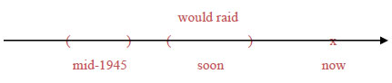
日本偷袭珍珠港，这件事情发生在 1945 年底。相对于1945年中，偷袭珍珠港事件还在不久后的未来。但是这整个都是过去的事件，所以应该用过去拼法的 would soon raid 来表示未来式。
The weatherman said it would rain, but it didn’t.
(气象报告说会下雨，结果没下。)
图示：
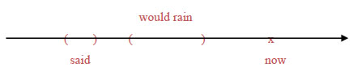
气象报告员在「说」的时候，「会下雨」还在未来。但是从过去式的 said 来看，这整件事情也是发生在过去，所以要采过去拼法的 would rain 来表现未来式。
传统文法中列出一条规则：「表示时间或条件的副词子句，用现在式代替未来式」。这个变化在英文写作时确实要能够掌握，否则很容易出现错误。这个问题基本上属于语气（moods）的问题，本书在后面的章节会有更完整的处理，届时我们充分理解之后就不必理会这条规则了。目前我们先初步设法理解这条规则是什么意思。规则中说到「副词子句」，所以首先来看一下名词子句与副词子句的差别，以免套错了规则。
规则中所谓「表示时间或条件的副词子句」，我们先把范围缩小到两个连接词：when和if。请比较下面这两句：
I know when he left the room.
S V O(名词子句)
(我知道他何时离开房间的。)
He forgot his briefcase when he left the room.
S V O (副词子句)
(当他离开房间的时候，他忘了公事包。)
句 1 中的 when he left the room 是名词子句，当做动词 know 的受词。连接词 when 来自疑问词、解释为「何时」。原本是这么一个疑问句：When did he leave the room?，把问号拿掉、疑问词 when 转为连接词使用，就会变成 when he left the room 这个名词子句。句 2 中的 when he left the room 看起来完全一样，却是个副词子句，用来修饰动词 forgot 的时间，属于时间副词子句，when 是外加的从属连接词，解释为「当……时候」 。
在此作一个小归纳：若连接词 when 是外加的、解释为「当……时候」，它引导的子句就是时间副词子句。若连接词 when 来自疑问词、解释为「何时」，它引导的子句则是由疑问句转变过来的名词子句。
接着再比较下面这两句：
I don't know if he will get the money.
S V O(名词子句)
(我不知道他是否会拿到钱。)
If he gets the money, he can help us.
(副词子句) S V O
(如果他拿到钱,就能帮我们的忙。)
句 1 中的 if he will get the money 是名词子句，当做动词 don’t know 的受词。连接词 if 相当于 whether、解释为「是否」。原本是 Will he get the money? 这个疑问句，拿掉问号之后改为 whether/if he will get the money 这个名词子句。句 2 中的 if he gets the moeny 则是副词子句，用来修饰动词 can help 的条件，属于条件副词子句，连接词 if 是外加的、解释为「如果」。
作一个小归纳：若连接词 if 是外加的、解释为「如果」，它引导的子句就是条件副词子句。若连接词 if 相当于 whether、解释为「是否」，它引导的子句就是由疑问句转变过来的名词子句。
有了上面那两项归纳，我们就可以把前面那条文法规则范围缩小、改写如下：「When 解释为『当……时候』、if 解释为『如果』，这两种连接词引导的副词子句要用现在式代替未来式」。接下来我们要问：为什么？
When he gets here, the police will be waiting.
（当他来到这里时，警察将在等候。）
图示：
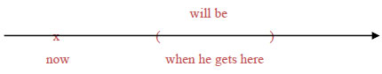
主要子句 the police will be waiting 中的动词 will be 采用的是未来式，表示这是将来的事情。至于 when he gets here 这个子句，外加的连接词 when 解释为「当……时候」，所以它引导的是个时间副词子句。为什么这种子句要用现在式动词gets代替未来式 will get？这是因为：「当……时候」这种子句，语气就是「当做」已经到了「那个时候」。换句话说：这种子句里面要把未来「当做」已经到了、就是「现在」，所以动词要采用现在式。
接下来再看看if这个连接词：
If he gets to the hospital in time, he’ll be able to see his father for the last time.
（如果他及时赶到医院，就能见到他父亲最后一面。）
图示：
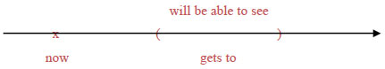
主要子句的动词 will be able to see 可以看出来是未来式，表示是未来时间。从属子句 if he gets to the hospital in time，它外加的连接词if解释为「如果」，所以这是一个条件副词子句，里面的动词要用现在式 gets 而不用未来式 will get。为什么？
因为，所谓的「如果」，语气是把原本还不确定的假设情况当做是事实来叙述，也就是「假如果真」，所以应该采用表达「事实」的现在简单式。我们不知道例句中的「他」到时候能不能够赶得及。但是，所谓「『如果』赶到」，意思就是「当做是『真的』赶到」，里面就该采用事实语气来叙述，把这件事情当做是真的，所以要用现在式而不是未来式。